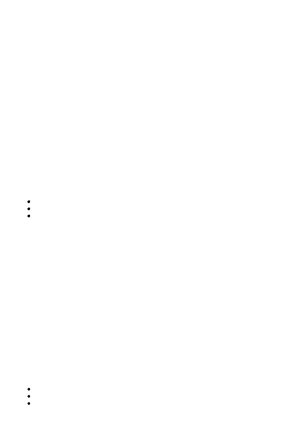

Selezioni regionali 2006
Le pesate di Bilancino (
)
Difficoltà D = 3
Descrizione del problema
Bilancino è un bambino con una passione maniacale, quella di mettere gli oggetti in ordine crescente di peso.
I suoi genitori posseggono un'antica e rara bilancia con due bracci uguali: posti due oggetti, uno per braccio,
la bilancia permette di stabilire quale dei due oggetti è più pesante, ma non permette di trovarne il peso
assoluto.
Oggi Bilancino vuole mettere in ordine crescente di peso N oggetti e, a tale scopo, ha già effettuato una serie
di M pesate, trascrivendone i risultati. Infatti, numerati tali oggetti da 1 a N, egli ha pesato M coppie di
oggetti distinti x e y, dove 1 <= x, y <= N, scrivendo i due interi x e y in quest'ordine su una riga per indicare
che x è più leggero di y e, invece, scrivendo y e x in quest'ordine per indicare che y è più leggero di x. Da
notare che non esistono due oggetti con lo stesso peso (siano essi stati pesati o meno da Bilancino) e che la
stessa coppia di oggetti non può essere pesata più di una volta.
Esaminate le M pesate finora eseguite da Bilancino e aiutatelo a decidere quale, tra le seguenti alternative,
consente di stabilire l'ordine crescente di peso tra gli N oggetti:
le M pesate sono sufficienti;
è necessaria un'ulteriore pesata;
sono necessarie due o più pesate.
Dati di input
Il file
è composto da M+1 righe.
La prima riga contiene due interi positivi separati da uno spazio: il primo intero rappresenta il numero N di
oggetti da ordinare in base al peso mentre il secondo intero rappresenta il numero M di pesate effettuate da
Bilancino.
Le successive M righe contengono coppie di interi positivi: la j-esima di tali righe è composta da due interi
distinti a e b separati da uno spazio, a rappresentare la j-esima pesata effettuata da Bilancino, in cui egli
scopre che l'oggetto a è più leggero dell'oggetto b (dove 1 <= j <= M e 1 <= a, b <= N). Da notare che la
stessa pesata non può apparire in più di una riga.
Dati di output
Il file
è composto da una riga contenente un solo intero come dalla seguente tabella.
0 : nessuna ulteriore pesata è necessaria per stabilire l'ordine crescente di tutti gli oggetti.
1 : serve e basta un'ulteriore pesata per stabilire l'ordine crescente di tutti gli oggetti.
2 : due o più pesate sono ulteriormente necessarie per stabilire l'ordine crescente di tutti gli oggetti.
Assunzioni
1 < N < 100.
1 <= M <= N(N-1)/2.
I dati in
garantiscono sempre che esiste almeno un ordinamento degli oggetti compatibile
con tutte le pesate trascritte da Bilancino.